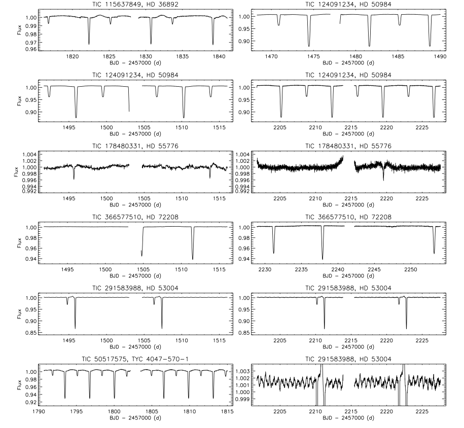
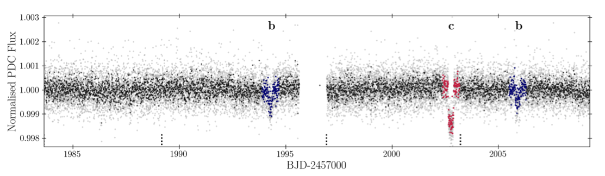

STATUS UPDATE: Orbit 1 of Sector 39 is now available to download as a TICA product from MAST
Welcome TESS followers this weeks news bulletin in which we look at three papers from the archive,
New eclipsing binaries with mercury-manganese stars (Kochukhov et. al., 2021) :
Eclipsing binary systems are rare and useful in that they allow for the precise determination of fundamental stellar parameters. Early-type chemically peculiar stars within these eclipsing binaries are even more important as they enable a better understanding of the origin and evolution of their unusual chemistry.
This paper uses TESS data to examine six eclipsing Mercury-manganese (HgMn) stars. These are late B-main sequence stars which have an abundance of heavy elements, slow rotation, and low magnetic fields. The authors discuss observations of eclipse variability in these systems, the discovery of which double the known number of eclipsing HgMn stars.
The characteristics of each of the six binaries were examined, and the authors confirmed the eclipses in HD 72208 - establishing this object as the longest-period eclipsing HgMn star. Two of the systems, HD 36892 and HD 53004, are eccentric systems showing heartbeat variability in addition to eclipses. HD 53004 has the highest eccentricity amongst all eclipsing HgMn stars known to date, and also has tidally induced oscillations. HD 55776 may also be orbited by a white dwarf.
Please see this fascinating paper for more information.
Planet Hunters TESS III: two transiting planets around the bright G dwarf HD 152843 (Eisner et al., 2021) :
Using TESS data the authors report on the discovery and validation of a double planetary system around a bright, V-band magnitude 8.85, G dwarf star known as TOI 2319. This host star has a radius of 1.43 R⊙, 1.15 M⊙.
Transits for the planets were originally detected by citizen scientists using TESS sector 25 data as part of the Planet Hunters project. When modeling these transits the authors determine a radius of 3.41 R⊕ for the inner planet, and an orbital period of 19.26 - 35 days and a radius of 5.83 R⊕ for the outer planet.
Radial velocities from HARPS-N and EXPRES allowed a mass estimate for the two planets, with planet b (the inner planet) estimated at 11.56 M⊕, and planet c having an upper mass limit of 27.5 M⊕.
TOI-1278 B: SPIRou unveils a rare Brown Dwarf Companion in Close-In Orbit around an M dwarf (Artigau et al., 2021) :
In this paper the authors present the results of a brown dwarf orbiting a M0V star known as TOI-1278. The brown dwarf has a mass of 18.5 MJup, and was first identified via a percent deep transit in the TESS photometry, which upon further inspection was reveled to be a grazing transit of a Jupiter sized object.
Radial velocity data taken by the SPIRou near-infrared high-resolution velocimeter and spectropolarimeter led to the detection of a Keplerian RV signal with a semi-amplitude of 2306 m/s in phase, with a 14.5-day transit period, and a slight eccentricity.
See this paper for more information about this interesting system.

Fig. 1: Taken from Kochukhov et. al., (2021). TESS light curves of HgMn stars. The bottom-right panel zooms on oscillations in the sector 33 light curve of HD 53004.

Fig. 2: Taken from Eisner et. al., (2021). Flux time series for HD 152843 vs, TESS Julian day (BJD-2457000.0) for Sectors 25. The light grey points show the short cadence data with a 2 minute sampling, whilst the black points are 10 minute averages. The dashed vertical lines at the bottom of the figure show the times of the TESS momentum dumps. The transit events are shown in blue and pink, corresponding to the inner and outer planet candidates.